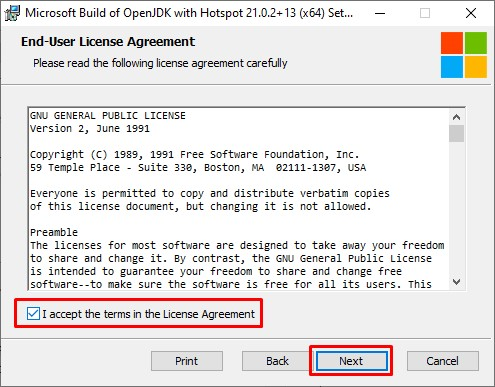
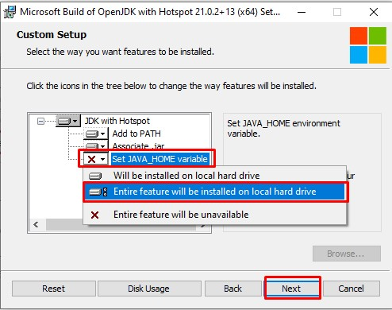
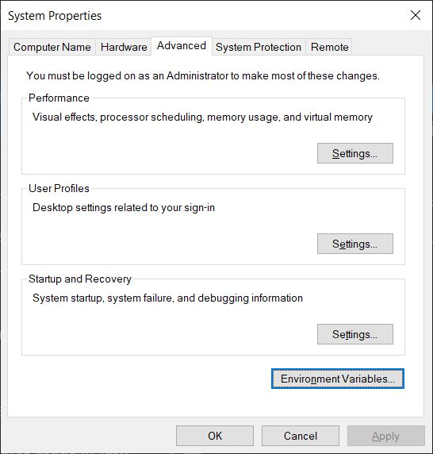
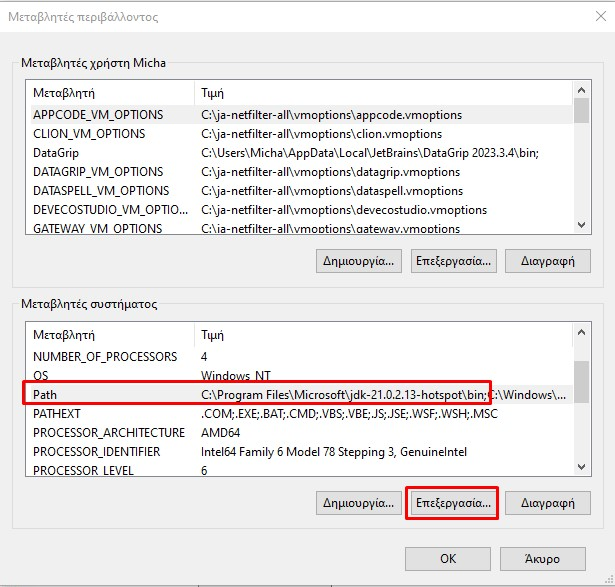
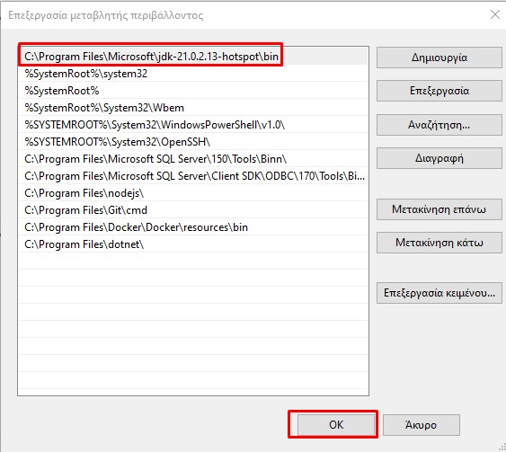
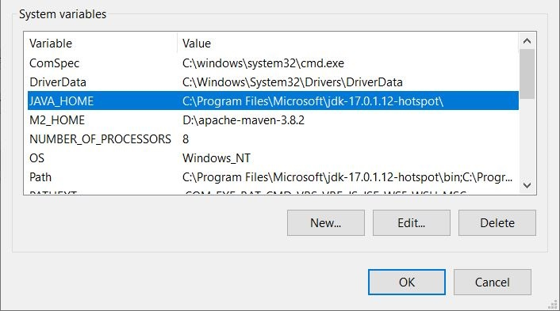
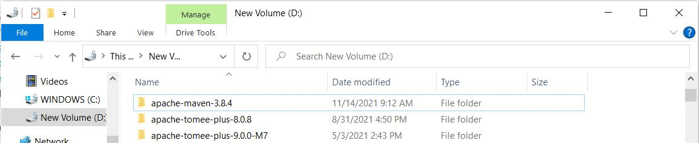

ΕΝΟΤΗΤΑ 1 JAVA SE - JAVA INSTALLATION ON WINDOWS
Στο σημερινό δωρεάν μάθημα Java, θα εγκαταστήσουμε το Java JDK που θα μας χρειαστεί για να γράφουμε, να κάνουμε διορθώσεις και να εκτελούμε εφαρμογές γραμμένες σε γλώσσα προγραμματισμού Java.
Για την ανάπτυξη προγραμμάτων σε γλώσσα προγραμματισμού Java, θα χρειαστεί να έχουμε τα εξής εργαλεία διαθέσιμα και εγκαταστημένα στον υπολογιστή μας με την ακόλουθη σειρά:
- Το Java Development Kit (JDK) από την Oracle
- Ένα Integrated Development Enviroment (IDE) για την δημιουργία και εκτέλεση Java κώδικα.
Για να μπορέσουμε να βρούμε την πιο τελευταία έκδοση της Java, θα πρέπει να πάμε στο site της Oracle (https://www.oracle.com/java/technologies/javase-downloads.html) . Στην αρχή, η λίστα με όλες τις διαφορετικές εκδόσεις που εμφανίζονται μπορεί να σας μπερδέψει. Οπότε ας εξηγήσουμε λίγο τις επιλογές που υπάρχουν στο site και ποια έκδοση θα αποφασίσουμε τελικά να χρησιμοποιήσουμε. Η πιο τελευταία έκδοση βρίσκεται στην αρχή της λίστας. Το κουμπί δεξιά από την έκδοση της Java μας δίνει μια και μόνο επιλογή κατεβάσματος που είναι το Oracle JDK.

Αυτό είναι το περιβάλλον που χρειαζόμαστε για να γράψουμε και ταυτόχρονα να τρέξουμε ένα πρόγραμμα γραμμένο σε κώδικα Java. Αν κατεβούμε πιο κάτω στην λίστα, θα δούμε παλαιότερες εκδόσεις (όπως Java 8), που εκτός από την JDK επιλογή, μας προσφέρουν και την JRE επιλογή. Μετά την έκδοση Java 10, η JRE επιλογή δεν υπάρχει πια, όπως δεν υπάρχει πια και η επιλογή για 32 ή 64 bit εγκατάσταση. Η JRE έκδοση της Java μας δίνει την δυνατότητα να τρέξουμε κάποια εφαρμογή γραμμένη σε Java αλλά δεν έχουμε compile και editing δυνατότητες. Αυτό σημαίνει ότι απλά χρησιμοποιούμε την JRE έκδοση της Java για να τρέχουμε τις εφαρμογές που ήδη έχουν γραφτεί με την χρήση του JDK. Αυτή η λογική αποσύρθηκε από την Oracle και ανεξάρτητα σε ποια έκδοση της Java εργάζεστε θα κατεβάζετε το JDK μόνο. Επίσης, όλες οι καινούργιες εκδόσεις της Java απαιτούν να τρέξουν μόνο σε 64 bit περιβάλλον. Τέλος, αν θέλετε να αναπτύξετε κάποιο πρόγραμμα που αργότερα θα πουλήσετε και δεν θέλετε να πληρώσετε license fees για την χρήση της Java σε παραγωγικό περιβάλλον μπορείτε να κατεβάσετε την open source έκδοση (jdk.java.net) η οποία συντηρείται και αυτή από την Oracle αλλά δεν παρέχει κανένα support αλλά ούτε και security updates.
Οπότε κατεβάζουμε την τελευταία έκδοση για να τρέξουμε τα προγράμματα μας? Η απάντηση είναι ΟΧΙ!!!. Αν κατεβείτε λίγο πιο κάτω από την έκδοση Java 14, που είναι και η πιο τελευταία, θα δείτε ότι υπάρχει η έκδοση 11 με το χαρακτηριστικό LTS. Τι σημαίνει αυτό? Αυτό σημαίνει ότι αυτή η έκδοση θα υποστηρίζεται για αρκετά χρόνια ακόμα και θα υπάρχουν συνεχόμενες βελτιώσεις και αναβαθμίσεις στα χαρακτηριστικά της όσο και στην ασφάλεια των βιβλιοθηκών που προσφέρει.

Οι τελευταίες εκδόσεις που εμφανίζονται στην αρχή της λίστας, είναι απλά περιοδικές και πειραματικές. Με άλλα λόγια δεν θα υπάρχουν άλλες αναβαθμίσεις στην Java 14 πέραν της έκδοσης που είναι διαθέσιμη για κατέβασμα. Άλλωστε μπορείτε εύκολα να το καταλάβετε αυτό γιατί η λίστα που εμφανίζεται στο download site της Oracle από την έκδοση Java 11 μετά μας δείχνει την Java 14. Αν η Oracle έχει κάτι καινούργιο να προσφέρει τότε θα το βγάλει με την μορφή μιας καινούργιας έκδοσης όπως Java 15. Καταλαβαίνετε λοιπόν, ότι όλες οι υπόλοιπες εκδόσεις, εκτός από την έκδοση 11, δεν είναι η σωστή επιλογή ανάπτυξης java εφαρμογών. Μπορείτε να σκεφτείτε την περίπτωση όπου έχετε αναπτύξει μια μεγάλη εταιρική εφαρμογή σε java 14 και μετά από λίγο καιρό να ανακαλύψετε ότι η συγκεκριμένη έκδοση δεν υποστηρίζεται πια και πρέπει να την αναπροσαρμόσετε σε μια πιο καινούργια έκδοση?
Εκτός από την μακροχρόνια υποστήριξη που θα λάβετε από την Oracle, για την έκδοση 11, υπάρχει και ένας ακόμα σοβαρός λόγος που μας κάνει να την επιλέξουμε και έχει να κάνει με το IDE μας. Τα IDE, όπως Eclipse, NetBeans, κτλ. χρησιμοποιούν java για να τρέξουν. Πρόσφατα, όλα τα IDE άρχισαν να υποστηρίζουν Java 11. Οπότε πριν ακόμα γράψουμε κάποιο πρόγραμμα Java, πρέπει να εγκαταστήσουμε την έκδοση εκείνη της Java την οποία χρειάζεται το ίδιο το IDE για να μπορεί να λειτουργήσει.
Πάντως, όλη αυτή η διαδικασία δεν σας περιορίζει καθόλου σε μια συγκεκριμένη έκδοση Java. Όταν εγκαταστήσουμε σωστά το IDE μας, μπορούμε μετά να κατεβάσουμε οποιαδήποτε έκδοση της Java επιθυμούμε (παλαιότερη ή νεότερη) και να την προσθέσουμε στο IDE μας. Έτσι ενώ έχουμε την Java 11 σαν κύρια έκδοση, μπορούμε για κάποια εφαρμογή να επιλέξουμε Java 8 ή Java 14. Φυσικά θα πρέπει να έχουμε εγκαταστήσει όλες τις εκδόσεις Java που επιθυμούμε να χρησιμοποιήσουμε.
Η εγκατάσταση είναι πολύ απλή. Για αρχή, επιλέγουμε την έκδοση εκείνη της Java 11 που συμφωνεί με το λειτουργικό μας σύστημα. Εμείς θα επιλέξουμε το Windows x64 Installer αφού όλα μας τα προγράμματα θα τα αναπτύξουμε σε Windows 10.
Όταν κατέβει το αρχείο, ξεκινήστε την εγκατάσταση και απλά πατήστε Next σε όλα τα παράθυρα που θα εμφανιστούν.
Όταν ολοκληρωθεί η εγκατάσταση, θα έχει δημιουργηθεί ένας καινούργιος φάκελος Java, στο Program Files, ο οποίος περιέχει το JDK-11. Στον ίδιο φάκελο Java θα έρθετε να βρείτε όλες τις διάφορες εκδόσεις Java που έχετε εγκαταστήσει στον υπολογιστή σας. Για παράδειγμα, ίσως να θέλετε να έχετε την πιο τελευταία έκδοση JDK εγκαταστημένη στον υπολογιστή σας για να πειραματιστείτε με τα καινούργια χαρακτηριστικά της Java, αλλά ταυτόχρονα για την καθημερινή σας εργασία να γράφετε εφαρμογές σε Java 8.
Αφήστε ανοιχτό το παράθυρο του File Explorer που μόλις ανοίξατε, γιατί θα χρειαστεί να αντιγράψουμε το path της εγκατάστασης της Java για το επόμενο βήμα.
Πρέπει τώρα να δηλώσουμε στα Windows 10 το που έχει εγκατασταθεί η Java 11, έτσι ώστε άλλα προγράμματα, όπως application servers, το maven αλλά και το IDE μας, να μπορούν να την βρουν για να λειτουργήσουν σωστά. Επίσης, θα μπορούμε και εμείς, να ανοίγουμε ένα CMD terminal στα Windows και να εκτελούμε εντολές Java ανεξάρτητα σε ποιο φάκελο μέσα είμαστε
Γράφουμε λοιπόν Advanced στο search πεδίο των Windows 10 και από τις εμφανιζόμενες επιλογές πατάμε στο View advanced system settings.
Στο παράθυρο που εμφανίζεται, κάνουμε κλικ στο Environment Variables για να μεταφερθούμε σε ένα καινούργιο παράθυρο όπου θα μπορέσουμε να προσθέσουμε μια καινούργια Environment Variable.

Πατάμε New στο system variables, και γράφουμε JAVA_HOME για Variable Name και το path όπως το είχατε βρει στο File Explorer (C:\Program Files\Java\jdk-11.0.7). Μετά πατάτε ΟΚ.


Τώρα πρέπει να δηλώσουμε το JAVA_HOME στο path System variable. Επιλέγουμε λοιπόν Path από τα System variables και πατάμε το κουμπί Edit.

Πατάμε New, γράφουμε %JAVA_HOME%\bin και πατάμε ENTER για να ολοκληρώσουμε την καταχώρηση. Αυτό είναι το path μέσα στο οποίο βρίσκονται τα εκτελέσιμα αρχεία της Java. Στο τέλος της διαδικασίας θα πρέπει να έχετε το ίδιο αποτέλεσμα όπως αυτό της πιο κάτω εικόνας.
Ας δοκιμάσουμε λοιπόν αν η όλη διαδικασία είχε επιτυχία. Ανοίγουμε ένα CMD παράθυρο και γράφουμε την εντολή Java -version. Θα πρέπει να σας εμφανιστεί η έκδοση της Java που έχετε εγκαταστήσει.

Στην επόμενη ενότητα θα εγκαταστήσουμε το IntelliJ Community Edition και θα δημιουργήσουμε το πρώτο μας “Hello World” πρόγραμμα στην Java.